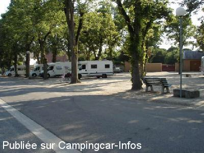
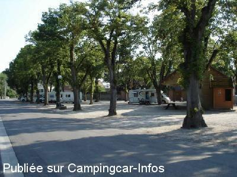
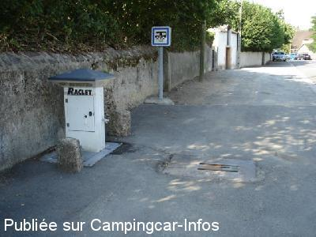
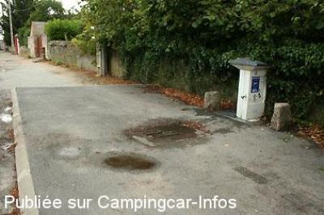
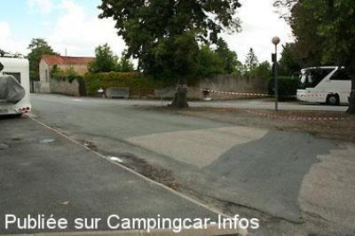
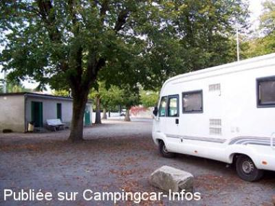

ASN = Aire de services avec stationnement nuit possible de :
GOUZON
(N° 307)
Accès/adresse :
Place du Champ de Foire
23230 GOUZON
23230 GOUZON
Latitude : (Nord) 46.19142° Décimaux ou 46° 11′ 29′′
Longitude : (Est) 2.24014° Décimaux ou 2° 14′ 24′′
Tarif : Gratuit
Type de borne : RACLET
Services :


Tables de pique-nique
Autres informations :
10 emplacements en terre battue
Éclairée, sous les arbres
Village étape
Tel +33 (0)555 622 039

Le 26/07/2012 par J P Bedouet

Le 26/07/2012 par J P Bedouet

Le 26/07/2012 par J P Bedouet

Le 10/08/2011 par Iakito

Le 10/08/2011 par Iakito

Le 04/10/2007 par jojo
de
T Pierre
le 16/07/2015 :
Avons passé une nuit d'étape,le 07 juillet 2015 sur cette aire, avons apprécié l'ombrage de la place par cette nuit de canicule, nuit calme et paisible, même le matin. Nous n'avons utilisé les services,
WC publics. Merci à la commune de mettre à notre disposition cette aire à l'écart des grands axes.
Avons passé une nuit d'étape,le 07 juillet 2015 sur cette aire, avons apprécié l'ombrage de la place par cette nuit de canicule, nuit calme et paisible, même le matin. Nous n'avons utilisé les services,
WC publics. Merci à la commune de mettre à notre disposition cette aire à l'écart des grands axes.
de
BARRE Michel
le 13/10/2013 :
Merci à la municipalité de mettre gratuitement ce parking et cette borne à la disposition des camping-caristes.
Cependant au niveau du fléchage, c'est surprenant...En arrivant de la 2x2voies,au niveau de l'église un panneau indique de tourner à gauche et c'est tout...
En fait il manque un panneau pour indiquer qu'il faut tourner tourner à droite environ 50 m après avoir pris à gauche.
Nous avons passé une bonne nuit, mais il faut savoir qu'à partir de 07h00, il y a un mouvement important de camions et cars scolaires sur et autour de ce parking.
Merci à la municipalité de mettre gratuitement ce parking et cette borne à la disposition des camping-caristes.
Cependant au niveau du fléchage, c'est surprenant...En arrivant de la 2x2voies,au niveau de l'église un panneau indique de tourner à gauche et c'est tout...
En fait il manque un panneau pour indiquer qu'il faut tourner tourner à droite environ 50 m après avoir pris à gauche.
Nous avons passé une bonne nuit, mais il faut savoir qu'à partir de 07h00, il y a un mouvement important de camions et cars scolaires sur et autour de ce parking.
de
pbl
le 13/10/2013 :
Il est vrai que le fléchage est incomplet.
Mais, ce n'est rien.
L'endroit est ombragé et très calme.
La borne de service est de l'autre côté de la route, sur un trottoir.
Elle manque un peu de largeur. On est vite sur ladite route si on doit ouvrir une soute ou le portillon WC.
Il est vrai que le fléchage est incomplet.
Mais, ce n'est rien.
L'endroit est ombragé et très calme.
La borne de service est de l'autre côté de la route, sur un trottoir.
Elle manque un peu de largeur. On est vite sur ladite route si on doit ouvrir une soute ou le portillon WC.
de
J P Bedouet
le 22/06/2013 :
Nouvelle nuit, du 10 au 11 juin, sur cette aire. Aucun souci, mais l'état des sanitaires n'a pas changé !
Nouvelle nuit, du 10 au 11 juin, sur cette aire. Aucun souci, mais l'état des sanitaires n'a pas changé !
de
hidena86
le 09/04/2013 :
06 avril 2013
De passage pour une nuit , deux camping-cars .
Aire très calme. Aire de service facile d'accès.
A deux pas des commerces . Ne pas oublier le Lion d'or , excellent accueil et prix corrests;
06 avril 2013
De passage pour une nuit , deux camping-cars .
Aire très calme. Aire de service facile d'accès.
A deux pas des commerces . Ne pas oublier le Lion d'or , excellent accueil et prix corrests;
de
Michel
le 05/09/2012 :
Aire très ombragée par les tilleuls (risque de dépôts de sève sur pare-brise et carrosserie), très fréquentée en cette fin d'août 2012 mais avec beaucoup de place. Sécurité assurée par des rondes de la gendarmerie la nuit.
Aire très ombragée par les tilleuls (risque de dépôts de sève sur pare-brise et carrosserie), très fréquentée en cette fin d'août 2012 mais avec beaucoup de place. Sécurité assurée par des rondes de la gendarmerie la nuit.
de
J P Bedouet
le 26/07/2012 :
Aire ombragée, un peu poussiéreuse. Tables de pique-nique disponibles, tout comme les sanitaires, hélas un peu dégradés.
Aire ombragée, un peu poussiéreuse. Tables de pique-nique disponibles, tout comme les sanitaires, hélas un peu dégradés.
de
JACOTTE 28
le 13/04/2011 :
j'y ai stationné plusieurs fois.
aire très calme et très sympa
services gratuits. merci à la municipalité!
j'y ai stationné plusieurs fois.
aire très calme et très sympa
services gratuits. merci à la municipalité!
de
Xtian74
le 12/11/2010 :
Signalée, aire en terre battue, éclairée, sous les arbres, avec tables de pique-nique proches, WC publics.
Coord. GPS N 46°11,483 E 002° 14,402. §
Nous y avons passé une nuit très calme en compagnie de 2 autres CC. Eau encore en service tant sur la borne que dans les toilettes. §
Signalée, aire en terre battue, éclairée, sous les arbres, avec tables de pique-nique proches, WC publics.
Coord. GPS N 46°11,483 E 002° 14,402. §
Nous y avons passé une nuit très calme en compagnie de 2 autres CC. Eau encore en service tant sur la borne que dans les toilettes. §
de
Looping
le 02/01/2010 :
Belle aire calme mais pas de télé à cause des arbres. Excellent resto à proximité : Hostellerie du lion d'or.
Belle aire calme mais pas de télé à cause des arbres. Excellent resto à proximité : Hostellerie du lion d'or.
de
PHIL58
le 27/05/2009 :
Bonjour. De passage fin Mai, cette étape calme et ombragée est sympathique. Bonne route!
Bonjour. De passage fin Mai, cette étape calme et ombragée est sympathique. Bonne route!
de
Jojo et Lulu
le 01/10/2007 :
De retour des grandes marées, super calme. Merçi à cette commune. Et surtout à proximité de la N145 Guéret --> Montluçon.
De retour des grandes marées, super calme. Merçi à cette commune. Et surtout à proximité de la N145 Guéret --> Montluçon.
de
papyalain
le 30/07/2007 :
Attention aux branches, un peu basses pour les capucines. Sinon, c'est parfait pour l'ombre et le calme, habitants sympas dans l'ensemble.
Attention aux branches, un peu basses pour les capucines. Sinon, c'est parfait pour l'ombre et le calme, habitants sympas dans l'ensemble.